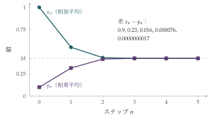

STEP II 2024、第8問
先に進む前に問題を読んでおこう。問題は、OCRが配布している2024年のSTEP問題一式（zipファイル）のSTEP IIに収録されている： www.ocr.org.uk/Images/725753-2024-past-papers.zip
導入
2つの正の数、たとえば \(\sqrt2\) と \(1\) をとる。これらを、その相加平均（arithmetic mean）と相乗平均（geometric mean）で置き換える。これを何度も繰り返す。すると次のようになる。
| \(n\) | \(x_n\)（相加平均） | \(y_n\)（相乗平均） |
|---|---|---|
| 0 | \(1.4142135623730950488\) | \(1\) |
| 1 | \(1.2071067811865475244\) | \(1.1892071150027210667\) |
| 2 | \(1.1981569480946342956\) | \(1.1981235214931201226\) |
| 3 | \(1.1981402347938772091\) | \(1.1981402346773072058\) |
| 4 | \(1.1981402347355922074\) | \(1.1981402347355922074\) |
わずか4回の操作で、2つの数は小数第20位まで一致する。この共通の極限が算術幾何平均（arithmetic–geometric mean）\(M(\sqrt2, 1) = 1.19814\ldots\) である。
1799年5月30日、21歳のガウス（Carl Friedrich Gauss）は日記に、\(1/M(\sqrt2, 1)\) が、まったく別の問題、すなわちレムニスケート（lemniscate）と呼ばれる曲線の弧長（arc length）に現れる定数と小数第11位まで一致することに気づいた、と書き記した。「これはきっと、解析学のまったく新しい分野を切り開くであろう」と彼は書いている。実際にそのとおりになった。本問は、ガウスの発見の背後にある鍵となる事実を証明するものである。すなわち、算術幾何平均（AGM）を用いると、通常のどの方法でも計算できない積分の値が求まるのである。
取りかかる前に
相異なる2つの正の数の相加平均が、つねに相乗平均より大きいのはなぜか。1行で証明できるだろうか。
これは相加相乗平均の不等式（AM–GM inequality）であり、小問 (i) のヒントがその1行の証明を与えている。\(x \neq y\) のとき \(\bigl(\sqrt{x} - \sqrt{y}\bigr)^2 > 0\) であり、これを展開すると \(x + y > 2\sqrt{xy}\) となる。小問 (i) のすべては、この事実と、それぞれの平均がもとの2数の間にあるという事実から導かれる。
順を追って解く
段階 1 2つの数列が挟み込まれる
\(y_n < x_n\) ならば \(\sqrt{x_n} \neq \sqrt{y_n}\) であるから \(x_n - 2\sqrt{x_n y_n} + y_n > 0\) であり、これは \(x_{n+1} > y_{n+1}\) を意味する。\(y_0 < x_0\) であるから、数学的帰納法（induction）により、すべての \(n\) について \(y_n < x_n\) が成り立つ。
\(x_n\) と \(y_n\) の相加平均が \(x_n\) より小さく、相乗平均が \(y_n\) より大きいのはなぜか。
\(y_n < x_n\) であるから、\(x_{n+1} = \frac{x_n + y_n}{2} < \frac{x_n + x_n}{2} = x_n\) であり、\(y_{n+1} = \sqrt{x_n y_n} > \sqrt{y_n y_n} = y_n\) である。したがって \[y_0 < y_1 < y_2 < \cdots < x_2 < x_1 < x_0.\] \(y_n\) は単調増加（increasing）で、上から \(x_0\) で抑えられている（bounded above）から、問題文の定理により、ある極限 \(M\) に収束する。
差については、 \[x_{n+1} - y_{n+1} < x_{n+1} - y_n = \frac{x_n + y_n}{2} - y_n = \frac12(x_n - y_n),\] であり、前半の結果よりこれは正である。よって差は各段階で少なくとも半分になる。すなわち \(0 < x_n - y_n < (x_0 - y_0)/2^n\) であり、これは \(0\) に収束する。
最後に、\(x_n = y_n + (x_n - y_n)\) は \(M\) に収束する数列と \(0\) に収束する数列の和であるから、\(x_n \to M\) も成り立つ。■
段階 2 置換積分
この置換（substitution）は唐突に見えるが、根号の中の2つの括弧がいずれも完全平方式（あるいはそれに近いもの）になるように設計されている。
\(t = \frac12\left(x - \frac{pq}{x}\right)\) として \(t^2 + pq\) を計算せよ。次に \(t^2 + \frac14(p + q)^2\) を計算せよ。どちらかはきれいに因数分解できるだろうか。
まず、 \[t^2 + pq = \frac14\left(x^2 - 2pq + \frac{p^2q^2}{x^2}\right) + pq = \frac14\left(x + \frac{pq}{x}\right)^2.\] 次に、 \[\begin{aligned} t^2 + \tfrac14(p + q)^2 &= \frac14\left(x^2 - 2pq + \frac{p^2q^2}{x^2} + p^2 + 2pq + q^2\right) \\ &= \frac{x^4 + (p^2 + q^2)x^2 + p^2q^2}{4x^2} = \frac{(x^2 + p^2)(x^2 + q^2)}{4x^2}. \end{aligned}\] また \(\dfrac{\mathrm{d}t}{\mathrm{d}x} = \dfrac12\left(1 + \dfrac{pq}{x^2}\right) = \dfrac{x^2 + pq}{2x^2}\) である。
これらを組み合わせよ。\(x\) が \(0\) から \(\infty\) まで動くとき、\(t\) はどう動くか。\(t\) についての積分は何になるか。
\(x\) が \(0\) から \(\infty\) まで増加するとき、\(t\) は（導関数が正であるから）\(-\infty\) から \(\infty\) まで増加する。\(x > 0\) に対して \[\sqrt{\bigl(t^2 + \tfrac14(p+q)^2\bigr)\bigl(t^2 + pq\bigr)} = \frac{\sqrt{(x^2+p^2)(x^2+q^2)}}{2x} \cdot \frac{x^2 + pq}{2x},\] であるから、 \[\frac{\mathrm{d}t}{\sqrt{\cdots}} = \frac{x^2 + pq}{2x^2} \cdot \frac{4x^2}{(x^2 + pq)\sqrt{(x^2+p^2)(x^2+q^2)}}\,\mathrm{d}x = \frac{2\,\mathrm{d}x}{\sqrt{(x^2+p^2)(x^2+q^2)}}.\] よって \(t\) についての積分は \(2\,\mathrm{I}(p, q)\) に等しい。
一方、\(t\) についての積分は、\(p\) と \(q\) をそれぞれ \(\frac12(p+q) = \mathrm{a}(p, q)\) と \(\sqrt{pq} = \mathrm{g}(p, q)\) で置き換えた \(\mathrm{I}\) とまったく同じ形をしている。ただし積分範囲は実数全体である。被積分関数は \(t\) について偶関数（even）であるから、\(t\) についての積分は \(2\,\mathrm{I}\bigl(\mathrm{a}(p,q), \mathrm{g}(p,q)\bigr)\) である。両者を比べて、 \[\mathrm{I}(p, q) = \mathrm{I}\bigl(\mathrm{a}(p, q), \mathrm{g}(p, q)\bigr). \qed\]
段階 3 積分の値を求める
\((x_0, y_0)\) から始めて、この恒等式を繰り返し適用せよ。\(n\) 回適用すると \(\mathrm{I}(x_0, y_0)\) は何に等しくなるか。\(n \to \infty\) のとき何が起こるか。
すべての \(n\) について \(\mathrm{I}(x_0, y_0) = \mathrm{I}(x_1, y_1) = \mathrm{I}(x_2, y_2) = \cdots = \mathrm{I}(x_n, y_n)\) である。\(n \to \infty\) のとき2つの引数はいずれも \(M\) に収束し、 \[\mathrm{I}(M, M) = \int_0^\infty \frac{\mathrm{d}x}{M^2 + x^2} = \left[\frac1M \arctan\frac{x}{M}\right]_0^\infty = \frac{\pi}{2M}.\] したがって \[\mathrm{I}(x_0, y_0) = \frac{\pi}{2M}. \qed\]
問題文では「\(\mathrm{I}(x_n, y_n) \to \mathrm{I}(M, M)\)」という段階を認めてよいことになっているが、これはきれいに正当化できる。\(p\) または \(q\) を大きくすると被積分関数は小さくなり、また \(y_n < x_n\) であるから、 \[\frac{\pi}{2x_n} = \mathrm{I}(x_n, x_n) < \mathrm{I}(x_n, y_n) < \mathrm{I}(y_n, y_n) = \frac{\pi}{2y_n}.\] 両側の評価はともに \(\frac{\pi}{2M}\) に収束し、しかも \(\mathrm{I}(x_n, y_n)\) はすべての \(n\) について同じ数 \(\mathrm{I}(x_0, y_0)\) であるから、これは \(\frac{\pi}{2M}\) に等しくなければならない。第 2.4 節 と同様、ここでもはさみうちの原理が用いられている。

振り返り
挟み込まれる2つの単調数列。一方は増加し、他方は減少し、その差は \(0\) に縮む。これは2つの数列が共通の極限をもつことを示す最も明快な方法である。
不変量。\(\mathrm{I}(x_n, y_n)\) という量はステップごとに決して変化しない。他のすべてが動く中で変わらないものを見つけることは、数学における最も強力な考え方の一つである。
巧妙な置換は当て推量ではなく、設計されたものである。この置換は、根号の中の式が因数分解できるように選ばれていた。
背後にある数学
小問 (i) は差が各ステップで少なくとも半分になることを示しており、これはステップごとにおよそ2進数1桁ずつ精度が上がることを意味する。しかし導入の表は、はるかに劇的なことを示している。正しい桁数が各ステップでおよそ2倍になっているのである（\(2, 4, 10, 21, 43, \ldots\)）。実際、 \[x_{n+1} - y_{n+1} = \frac12\bigl(\sqrt{x_n} - \sqrt{y_n}\bigr)^2 = \frac{(x_n - y_n)^2}{2\bigl(\sqrt{x_n} + \sqrt{y_n}\bigr)^2},\] であるから、各段階の差はおよそ直前の差の2乗の定数倍である。これを二次収束（quadratic convergence）といい、第 2.7 節 できちんと学ぶ。
楕円積分
本問の積分 \(\mathrm{I}(p, q)\) は、姿を変えた完全楕円積分（complete elliptic integral）である。これは楕円の弧長を計算する際に現れる種類の積分であり、読者の知っている関数を用いて表すことはできない。その最も有名な応用は振り子（pendulum）である。周期を表すAレベル（A level、英国の大学入学資格試験）の公式 \(T = 2\pi\sqrt{L/g}\) は、振れ幅が小さい場合の近似にすぎない。角度 \(\theta_0\) から放した振り子の正確な周期は \[T = \frac{2\pi\sqrt{L/g}}{M\bigl(1, \cos\frac{\theta_0}{2}\bigr)},\] であり、これは算術幾何平均によって値が求まる楕円積分である。\(\theta_0 = 90^\circ\) のとき、真の周期は簡単な公式の予測より約 \(18\%\) 長い。ガウスの日記の記述はレムニスケート、すなわち8の字形の曲線に関するものであった。その全弧長には \(\int_0^1 \frac{\mathrm{d}t}{\sqrt{1-t^4}}\) が現れ、この積分は姿を変えた \(\mathrm{I}(\sqrt2, 1)\) に等しいので、算術幾何平均によって値が求まるのである。
\(\pi\) の計算
1976年、Richard Brent と Eugene Salamin はそれぞれ独立に、ガウスの考えを、正しい桁数が各ステップで2倍になる \(\pi\) の計算アルゴリズムへと仕立てた。25ステップで数千万桁が得られる。この種のアルゴリズムは1980年代から1990年代にかけて \(\pi\) の記録的な計算に用いられ、現在では高精度が必要なあらゆる場面で、このような二次収束するアルゴリズムが標準となっている。ステップごとに約 \(0.6\) 桁しか精度が上がらない 第 2.5 節 のヴィエト（Viète）の積と比べてみるとよい。
思考のスキル
ある操作が多くのものを一度に変えるときは、変わらない量を探せ。そしてその量を、すべてが単純になる操作の最後で評価せよ。
ここでは操作が算術幾何平均のステップであり、不変量（invariant）が積分 \(\mathrm{I}\) であった。操作の最後では2つの引数が等しくなり、積分は初等的に計算できた。不変量は、力学におけるエネルギー保存（第10章）から、ある種のパズルが解けないことの証明に至るまで、数学のあらゆるところに現れる。
次の一歩
二次収束。恒等式 \(x_{n+1} - y_{n+1} = \dfrac{(x_n - y_n)^2}{2(\sqrt{x_n} + \sqrt{y_n})^2}\) を証明し、\(x_{n+1} - y_{n+1} \leq \dfrac{(x_n - y_n)^2}{8 y_0}\) を導け。
手計算。電卓を使って \(M(2, 1)\) を小数第6位まで求めよ。何ステップ必要だったか。
スケーリング。\(\lambda > 0\) に対して \(M(\lambda x, \lambda y) = \lambda M(x, y)\) であること、および \(\mathrm{I}(\lambda p, \lambda q) = \lambda^{-1}\mathrm{I}(p, q)\) であることを示せ。これら2つの事実が \(\mathrm{I}(x_0, y_0) = \pi/(2M)\) と矛盾しないことを確かめよ。
振り子。上の公式を用いて、\(60^\circ\) から放した振り子の周期が、小振幅での予測よりどれだけ長いかを有効数字3桁で求めよ。
さらに学ぶために
David Cox,「The arithmetic–geometric mean of Gauss」, L’Enseignement Mathématique 30 (1984)（ガウスの算術幾何平均）。歴史と数学についての古典的な解説である。最初の数節は微積分の知識だけで読める。
Jonathan Borwein & Peter Borwein, Pi and the AGM (Wiley)（円周率と算術幾何平均）。算術幾何平均と \(\pi\) の高速計算についての決定版といえる本である。
Jonathan Borwein & Keith Devlin, The Computer as Crucible (A. K. Peters)（るつぼとしてのコンピュータ）。実験数学を扱い、ガウスの発見のように数値の一致に気づくことから生まれた発見も紹介している。